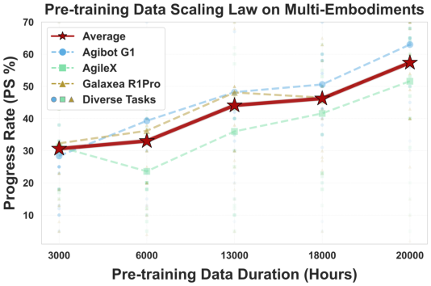
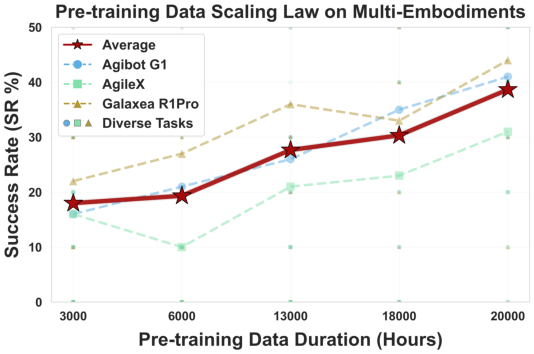
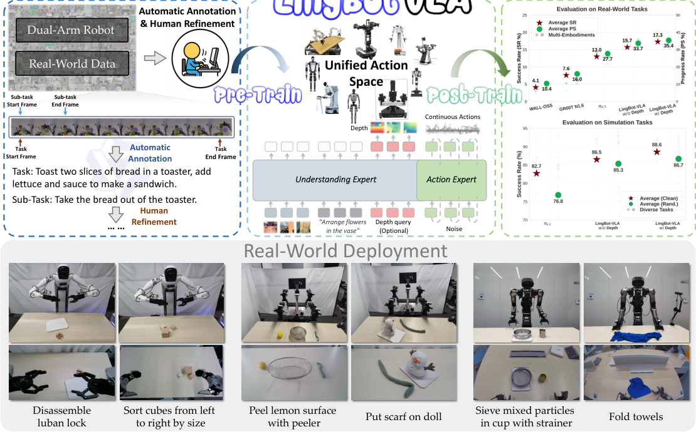

💡速记层 · 思想 / 逻辑 / 方法
默认读完就走的一层——只讲思想、逻辑、方法骨架；效果只作验证。要核对原文/钻细节再看「深读层」。
- 已有大量 VLA 模型，但没有人在真实机器人上系统研究"更多数据→更好性能"的关系；能否 scale 仍是未解之题。
- 数据规模研究需要大量 GPU 小时，现有开源训练框架（OpenPI/StarVLA/DexBotic）在多节点大规模时存在 I/O 瓶颈和通信开销。
- 解法是同时做两件事：① 真实采集 20k 小时多本体数据，② 搭一个 FSDP2 + FlexAttention + torch.compile 的高效训练 codebase。
- 有了大数据 + 高效训练，才能做可重复的大规模基准（GM-100，100 任务 × 3 平台 × 22,500 trials），彻底隔离硬件差异。
- 实证结论：从 3k 到 20k 小时 SR 持续上升，尚未饱和——这本身就是该领域最有价值的 empirical finding 之一。
在 GM-100 基准上，LingBot-VLA w/ depth 平均 SR 17.30%，超过 π0.5（13.02%）、GR00T N1.6（7.59%）、WALL-OSS（4.05%）；同时只用 80 条 post-training demos 即超越 π0.5 的 130 条——数据效率更高。
想看具体数字（点开）
- Agibot G1: LingBot w/ depth SR 11.98% vs π0.5 7.77%（+4.21%）
- AgileX: LingBot w/ depth SR 18.93% vs π0.5 17.20%（+1.73%）
- Galaxea R1Pro: LingBot w/ depth SR 20.98% vs π0.5 14.10%（+6.88%）
- RoboTwin 2.0（仿真）清洁场景：LingBot w/ depth 88.56% vs π0.5 82.74%
- RoboTwin 2.0 随机化场景：LingBot w/ depth 86.68% vs π0.5 76.76%（+9.92%）
- 预训练数据从 3k→20k 小时，SR 从约 18%→39%（多本体均值，25 任务子集）
- 256 GPU 聚合吞吐 7,356 samp/s（Qwen2.5-VL-3B-π），接近线性扩展
Track A（操作 VLA）中等相关：LingBot-VLA 的核心贡献是双臂操作的 scaling empirics + 开源训练基础设施，架构上选择 MoT + Flow Matching 与当前主流 VLA 设计接近。若你做移动操作 VLA，可借鉴其 MoT 架构和 FSDP2 训练效率优化；数据层面只涉及固定底盘双臂，不含移动底盘，泛化结论需要谨慎迁移。Track B（足式控制）不相关——本文不涉及 locomotion、足式任何内容。建议中等深读：重点看架构设计和 scaling 实验，具体任务数字参考即可。
◆核心观点 · 证据
每条 = 中文论点 + 📍页/节 + 🔤逐字原文(Ctrl-F 锚点) + 🀄译文 + 💡解读。
there remains a lack of comprehensive empirical studies on how real-robot performance scales with increasingly vast pre-training datasets. Moreover, the community lacks a highly optimized training codebase capable of efficiently conducting these scaling evaluations on massive volumes of data.


By scaling pre-training data from 3,000 hours to 20,000 hours, we demonstrate that downstream success rates improve consistently and substantially. Notably, this scaling behavior shows no signs of saturation even at the 20,000-hour mark, suggesting that VLA performance continues to benefit from increased data volume.

LingBot-VLA integrates the pre-trained VLM (i.e., Qwen2.5-VL) with an initialized action generation module called 'action expert'. These components are organized via a Mixture-of-Transformers (MoT) architecture like BAGEL, where vision-language and action modalities are processed through distinct transformer pathways, coupled by a shared self-attention mechanism for layer-wise unified sequence modeling.
The action expert vθ is trained to predict the conditional vector field by minimizing the Flow Matching objective: LFM = Es∼U[0,1],At,ϵ ∥vθ(At,s, Ot, s) −(At −ϵ)∥2
we apply the learnable queries [Q1t, Q2t, Q3t] corresponding to three-view operational images. To integrate depth information, these queries are processed by VLM and then aligned with the depth tokens [D1t, D2t, D3t] from LingBot-Depth. We align the VLM learnable queries and LingBot-Depth tokens by minimizing the distillation loss Ldistill = EQt |Proj(Qt) −Dt|
we construct specific "shard groups" exclusively for the action expert modules. This strategy effectively mitigates the communication overhead associated with excessive parameter sharding. Additionally, we implement a mixed-precision policy: performing reductions in torch.float32 to ensure numerical stability, while utilizing torch.bfloat16 for storage and communication.
The multimodal fusion of vision, language, and action within our architecture is fundamentally a sparse attention process. To address this, we leverage FlexAttention to optimize computation. Furthermore, we apply operator fusion (via torch.compile) to reduce kernel launch overhead and maximize memory bandwidth utilization.
Our experimental framework comprises three core components: (1) 25 physical robots spanning 3 distinct commercial platforms, (2) GM-100 benchmark featuring 100 diverse manipulation tasks with 39,000 expert demonstrations and (3) a controlled evaluation protocol generating 22,500 trials comparing LingBot-VLA against three state-of-the-art baselines under identical training and testing conditions.
By incorporating depth-based spatial information, LingBot-VLA w/ depth achieves an average SR improvement of 4.28% and a PS increase of 7.76% over π0.5 across the three embodiments.
LingBot-VLA w/o depth yields absolute success rate increases of over 3.76% in clean environments and 8.58% in randomized scenarios. By employing learnable query-based alignment, the integration of depth information enables LingBot-VLA to effectively extract rich spatial priors from LingBot-Depth model. The approach surpasses the baseline model by absolute margins of 5.82% and 9.92% in clean and randomized configurations, respectively.
with a limited budget of only 80 demonstrations per task, LingBot-VLA outperforms π0.5 using the full 130-demonstration set in both Progress Rate and Success Rate. Notably, the performance margin between LingBot-VLA and π0.5 widens significantly as the volume of post-training data increases, demonstrating superior data efficiency and scalability.
⎘开源状态 · 实时核查（2026-06）
论文 §Abstract 明确承诺开放代码、模型权重和基准数据。以下为截至当前实际核查状态（GitHub 1.4k ⭐，最近更新 2026-04-30）。
- 代码
- 已开源 github.com/Robbyant/lingbot-vla（Apache-2.0；含训练/推理/评测；2026-04 已升级至 LeRobot v3.0）
- 模型权重
- 已开源 robbyant/lingbot-vla-4b（基础版）、
lingbot-vla-4b-depth（带深度版）、RoboTwin 微调版，HuggingFace + ModelScope 双镜像 - 基准数据
- 已开源 robbyant/lingbot-GM-100（GM-100 基准 39,000 条专家演示；部分 rosbag 录像亦将陆续开放）
- 预训练数据
- 未公开 20,000 小时自采多本体遥操数据暂未开放（计划随论文更新逐步释出）
- 许可证
- 宽松 Apache-2.0，商业用途友好
To advance the field of robot learning, we provide open access to the code, base model, and benchmark data, with a focus on enabling more challenging tasks and promoting sound evaluation standards.
⚖批判 · 评级
① 首个系统性 VLA scaling 实证：3k→20k 小时的 SR 单调上升曲线，为该领域提供了真实数据参照。② 全开源且可复现：代码/权重/GM-100 基准数据同步发布，Apache-2.0，有 1.4k ⭐ 社区验证。③ MoT + FSDP2 工程示范：大规模多节点 VLA 训练的效率优化细节（shard group 拆分、FlexAttention 稀疏注意力）对实际工程有直接参考价值。④ GM-100 基准本身是贡献——100 任务 × 3 平台的大规模真机评测标准，后续社区可复用。
① 绝对 SR 偏低：最高约 21%（Galaxea R1Pro），任务级成功率远低于同期部分 closed-source 系统，作者以"任务难度高"解释但无 difficulty baseline 支撑。② 固定底盘双臂：9 种本体全为桌面双臂，无移动底盘、无人形，"foundation model"定位略显局限。③ 预训练数据不公开：20k 小时自采数据是核心壁垒，开源权重可用但完整复现 scaling 实验不可行。④ MoT 消融缺失：没有对比"不用 MoT 直接 concat"的消融，MoT 的有效性依赖 BAGEL 引用而非本文自证。⑤ GM-100 与 GR00T N1.6 比较有潜在偏差：GR00T N1.6 原始训练含大量 Galaxea R1Pro 数据，在该平台上分数偏高而 AgileX 偏低，说明预训练分布与评测平台的匹配度对比较结果影响较大。
评级：Important 在双臂操作 VLA 的 scaling 实证和开源基础设施方面做出了实质性贡献，但整体是"大规模工程+实验报告"而非算法突破；对 Track A 有参考价值，建议中等深读架构与工程细节。